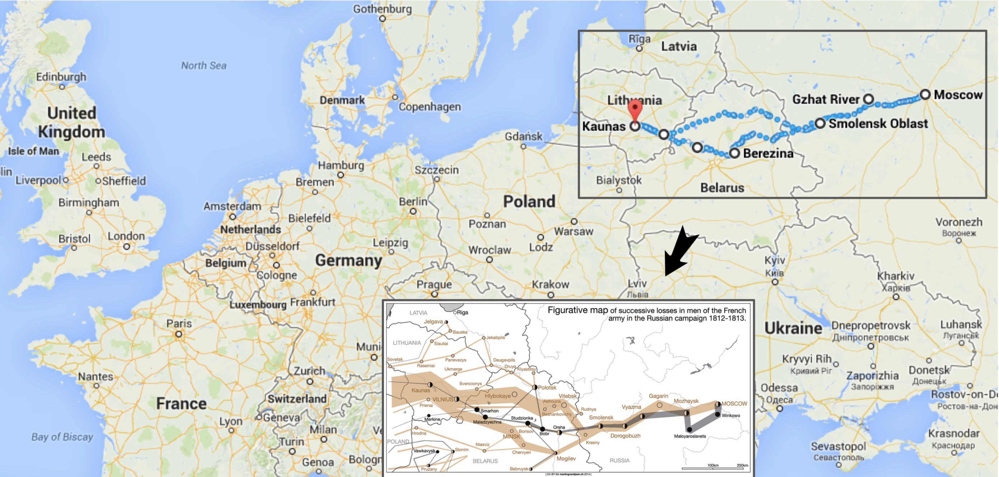
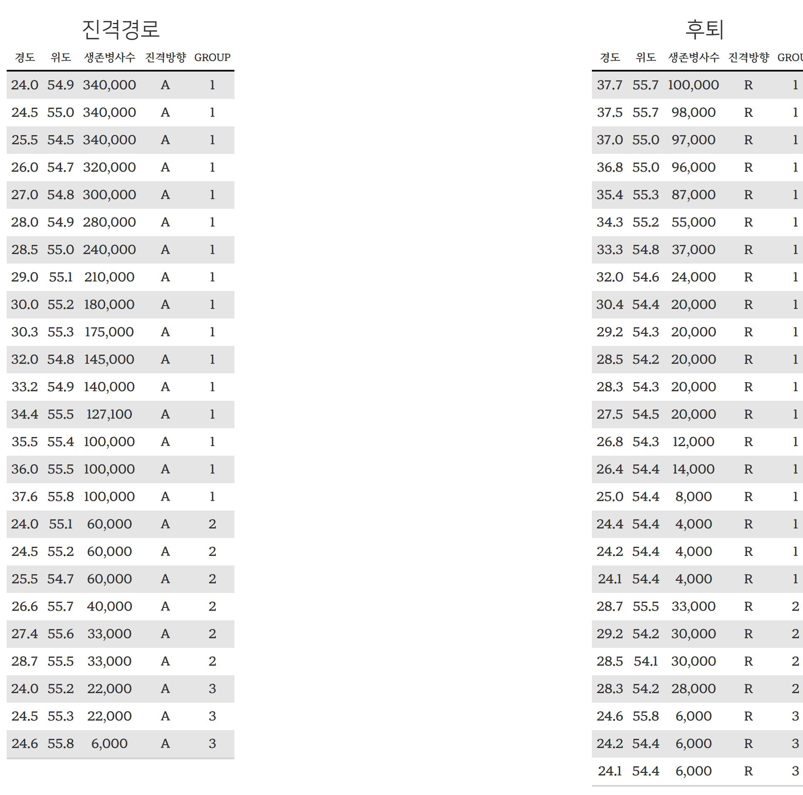
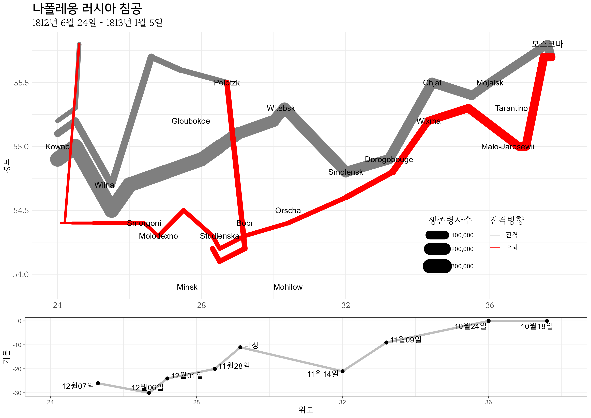

library(HistData)
library(tidyverse)
library(gt)
library(gtExtras)
data(Minard.troops)
data(Minard.cities)
data(Minard.temp)
attack_tbl <- Minard.troops |>
filter(direction == "A")
retreat_tbl <- Minard.troops |>
filter(direction == "R")
attack_gt <- attack_tbl |>
gt() |>
gt_theme_hangul() |>
fmt_integer(columns = survivors) |>
cols_align("center") |>
cols_label(
long = "경도",
lat = "위도",
survivors = "생존병사수",
direction = "진격방향"
) |>
tab_header(title = "진격경로")
retreat_gt <- retreat_tbl |>
gt() |>
gt_theme_hangul() |>
fmt_integer(columns = survivors) |>
cols_align("center") |>
cols_label(
long = "경도",
lat = "위도",
survivors = "생존병사수",
direction = "진격방향"
) |>
tab_header(title = "후퇴")
attack_retreat_gt <- gtExtras::gt_two_column_layout(list(attack_gt, retreat_gt))
# gtsave_extra(attack_retreat_gt, "images/attack_retreat_gt.png")8 나폴레옹 러시아 침공
나폴레옹의 러시아 원정은 1812년, 대륙봉쇄령을 강화하려는 의도로 시작되었다. 영국의 경제를 약화시키기 위해 대륙봉쇄령을 시행하는 나폴레옹은 유럽 주요 국가들에게 영국과 거래 중단을 요청하였으나, 러시아는 이에 따르지 않았다. 이로 인해 두 국가 간의 긴장이 고조되어 나폴레옹은 대대적인 군사 원정을 계획하게 되었다.
1812년 6월, 나폴레옹은 약 600,000명의 병력을 동원하여 러시아에 침공했다. 러시아의 청야전술과 광활한 황무지는 군대에 큰 시련을 줬다. 나폴레옹 군대가 모스크바에 도착했을 때 이미 모스코바는 화재로 도시 기능을 잃었고, 러시아가 평화 협상에 응하지 않아 기대했던 성과도 거둘 수 없었다. 결국, 군사적 실패와 식량 부족, 추운 날씨, 러시아군의 계속되는 습격에 시달리며 병력 대부분을 잃고 귀환했고, 원정은 실패로 일달락 되었다. 러시아 원정은 나폴레옹 제국 몰락을 앞당긴 결정적 순간으로 기록되었다.

8.1 미나르 지도
찰스 조셉 미나르(Charles Joseph Minard)가 제작한 1869년 지도는 나폴레옹의 1812년 러시아 원정을 시각적으로 표현한 것으로, 다양한 데이터 시각화의 원칙과 기술을 혁신적으로 보여주는 명작으로 평가받고 있다. 나폴레옹 군대가 러시아로 진군하고 다시 귀환하는 과정에서 병력이 얼마나 줄어들었는지를 선의 두께로 표시했을 뿐만 아니라, 지도에는 군대 이동 경로, 위치, 날짜, 온도 등 다양한 정보가 함께 표시되어, 단순한 지리적 정보를 넘어서 시간과 조건에 따른 변화까지 한 눈에 파악할 수 있다.
미나르의 지도는 데이터 시각화의 중요성과 효과를 입증하는 고전으로 여겨진다. 복잡하고 다양한 데이터를 단순하면서도 명확하게 표현함으로써, 복잡한 사건과 현상을 이해하기 쉽게 제작했다. 나폴레옹 군대의 군사적 실패 뿐만 아니라, 병참, 전략, 날씨가 군사 작전에 미치는 영향을 진군과 후퇴를 색상을 달리하여 표현하는 등 시각화를 통해 잘 보여주고 있다.

저자를 포함한 많은 분들이 프랑스 파리에서 출발하여 러시아 원정이 시작되었다고 잘못알고 있으나, 1812년 러시아 원정 시작지는 니멘 강(Neman River)을 건너는 지점으로 니멘 강은 당시 러시아와 프랑스 연합국인 프러시아(당시 동유럽에 위치) 사이에서 경계를 형성하고 있었다. 1812년 6월 24일, 나폴레옹의 대군이 이 강을 건너면서 러시아 침공을 시작됐다.

8.2 데이터
8.2.1 생존병사 수
HistData 패키지에 나폴레옹 러시아 원정 데이터셋이 포함되어 있다. 원데이터셋은 minard.txt 파일에서 바로 얻을 수 있다.
HistData, tidyverse, gt, gtExtras 패키지를 활용하여 나폴레옹 러시아 원정 데이터를 표형태로 출력한다.
먼저 필요한 패키지를 불러온 다음, 병사 이동 경로(Minard.troops), 도시 정보(Minard.cities), 기온 데이터(Minard.temp)를 적재하고, filter() 함수를 사용하여 진격과 후퇴 상황에 따라 데이터를 나눠 attack_tbl과 retreat_tbl에 저장한다.
gt() 함수로 데이터프레임을 표로 변화시키는데, gt_theme_hangul() 함수는 한글 테마를 적용하고, fmt_integer()는 정수 형태로 천단위 넘는 숫자 가독성을 높이고, cols_align() 함수로 칼럼을 가운데 정렬하고, cols_label()로 칼럼 라벨을 영어에서 한글로 변환한다. tab_header() 함수로 진격과 후퇴 제목을 설정하여 attack_gt와 retreat_gt에 각각 저장한다. 마지막으로 gtExtras::gt_two_column_layout() 함수를 사용하여 두 표를 병합하여 마무리한다.

8.2.2 후퇴 기온
Minard.temp 데이터셋을 사용하여 후퇴 시점의 온도 정보를 표로 제작한다. 먼저 mutate() 함수를 통해 date 칼럼 값을 문자열로 변환하고, “1812” 연도를 추가해 날짜 정보를 완성한다. mdy() 함수를 사용해 날짜 문자열을 Date 자료형으로 변환하는데, quiet = TRUE 옵션을 설정해 경고 메시지를 표시하지 않게 한다.
이후에는 gt() 함수를 사용해 데이터 프레임을 테이블로 변환하게 된다. gt_theme_hangul()을 통해 테이블에 한국어 테마를 적용하고, cols_align("center")로 모든 칼럼을 가운데 정렬한다. cols_label() 함수를 통해 각 칼럼에 적절한 한국어 레이블을 지정한다. 만약
gt() 함수로 데이터프레임을 표로 변화시키는데, gt_theme_hangul() 함수는 한글 테마를 적용하고, fmt_integer()는 정수 형태로 천단위 넘는 숫자 가독성을 높이고, cols_align() 함수로 칼럼을 가운데 정렬하고, cols_label()로 칼럼 라벨을 영어에서 한글로 변환한다. 관측날짜 칼럼에 누락된 값이 있으면, fmt_missing(missing_text = "-")를 사용하여 누락된 값을 “-”로 표시한다.
fmt_date() 함수를 사용하여 date 칼럼의 날짜 형식을 date_style = "yMMMd"와 locale = "ko"를 설정하여 연도, 월, 일을 대한민국 기준에 맞춘다.
Minard.temp |>
mutate(date = as.character(date), # date를 문자열로 변환
date = str_glue("{date}/1812")) |>
mutate(date = mdy(date, quiet = TRUE)) |> # quiet = TRUE로 경고 메시지 방지
gt() |>
gt_theme_hangul() |>
# fmt_integer(columns = survivors) |>
cols_align("center") |>
cols_label(
long = "위도",
temp = "기온",
days = "후퇴날짜",
date = "관측날짜") |>
tab_header(title = "후퇴 온도") |>
gt::fmt_missing(missing_text = "-") |>
fmt_date(
columns = date,
date_style = "yMMMd",
locale = "ko"
)| 후퇴 온도 | |||
| 위도 | 기온 | 후퇴날짜 | 관측날짜 |
|---|---|---|---|
| 37.6 | 0 | 6 | 1812년 10월 18일 |
| 36.0 | 0 | 6 | 1812년 10월 24일 |
| 33.2 | -9 | 16 | 1812년 11월 9일 |
| 32.0 | -21 | 5 | 1812년 11월 14일 |
| 29.2 | -11 | 10 | - |
| 28.5 | -20 | 4 | 1812년 11월 28일 |
| 27.2 | -24 | 3 | 1812년 12월 1일 |
| 26.7 | -30 | 5 | 1812년 12월 6일 |
| 25.3 | -26 | 1 | 1812년 12월 7일 |
8.3 시각화
나폴레옹의 러시아 침공을 앞선 데이터셋을 바탕으로 시각화한다. HistData 패키지에서 제공하는 Minard 데이터셋을 이용하여 병력의 이동 경로와 생존 병사 수를 그리고(plot_troops), 주요 도시의 위치를 표시한다(plot_cities). 두 그래프를 합쳐 하나의 그래프(plot_minard)로 만들고, 그 위에 온도 변화(plot_temp)까지 표시한다. 마지막으로 grid.arrange 함수를 사용해 두 그래프를 하나로 합치고, 이를 이미지 파일로 저장한다.
병력 이동, 생존자 수, 도시 위치, 그리고 온도 변화, 진격과 후퇴 색상을 달리하여 나폴레옹 러시아 침공에 대한 전반적인 사항을 한눈에 볼 수 있는 시각화 그래프를 제작했다.
library(HistData)
library(ggrepel)
require(scales)
require(gridExtra)
data(Minard.troops)
data(Minard.cities)
data(Minard.temp)
levels(Minard.cities$city) <- c("Bobr", "Chjat", "Dorogobouge", "Gloubokoe", "Kowno", "Malo-Jarosewii",
"Minsk", "Mohilow", "Moiodexno", "Mojaisk", "모스코바", "Orscha",
"Polotzk", "Smolensk", "Smorgoni", "Studienska", "Tarantino",
"Wilna", "Witebsk", "Wixma")
# 병력 이동 경로와 도시 이름을 레이어에 올린다.
plot_troops <- ggplot(Minard.troops, aes(long, lat)) +
geom_path(aes(size = survivors, colour = direction, group = group),
lineend = "round", linejoin = "round")
plot_cities <- geom_text(aes(label = city), size = 4, data = Minard.cities)
# 눈금 정보, 라벨을 추가
# 온도를 맞추도록 경도에 대한 x축 명시적 설정.
breaks <- c(1, 2, 3) * 10^5
plot_minard <- plot_troops + plot_cities +
scale_size("생존병사수", range = c(1, 10),
breaks = breaks, labels = scales::comma(breaks)) +
scale_color_manual("진격방향",
values = c("grey50", "red"),
labels=c("진격", "후퇴")) +
coord_cartesian(xlim = c(24, 38)) +
labs(x = NULL,
y = "경도",
title = "나폴레옹 러시아 침공",
subtitle = "1812년 6월 24일 ~ 1813년 1월 5일") +
theme_korean() +
theme(legend.position=c(.8, .2), legend.box="horizontal")
plot_temp <- Minard.temp %>%
mutate(date = case_when(str_detect(date, "Oct") ~ str_replace(date, "Oct", "10월"),
str_detect(date, "Nov") ~ str_replace(date, "Nov", "11월"),
str_detect(date, "Dec") ~ str_replace(date, "Dec", "12월"),
TRUE ~ "미상")) %>%
mutate(date = glue::glue("{date}일")) %>%
mutate(date = ifelse(date == "미상일", "미상", date)) %>%
ggplot(aes(long, temp)) +
geom_path(color="grey", size=1.5) +
geom_point(size=2) +
geom_text_repel(aes(label=glue::glue("{date}")) ) +
xlab("위도") + ylab("기온") +
coord_cartesian(xlim = c(24, 38)) +
theme_korean()
# 그래프 결합
minard_g <- grid.arrange(plot_minard, plot_temp, nrow=2, heights=c(3,1))
ggsave( glue::glue("images/나폴레옹_러시아.png") ,
minard_g,
device = ragg::agg_png,
width = 297, height = 210, units = "mm", res = 600)